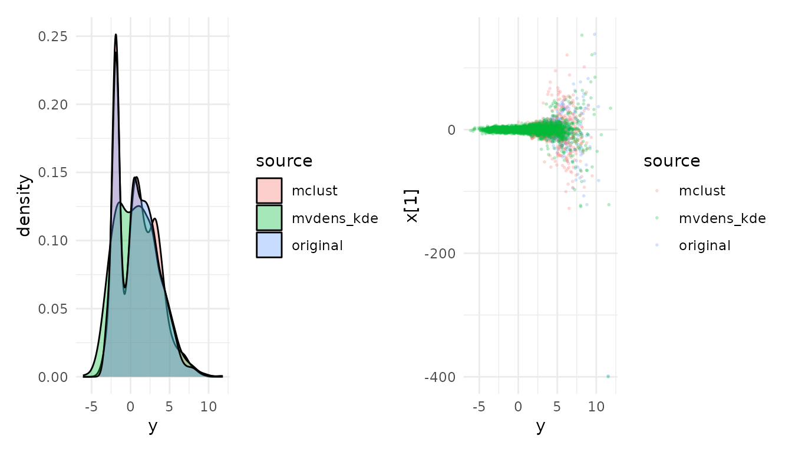

This vignette compresses Neal’s funnel posterior (a classic stress
test because of the strong dependency between y and
x) with compress_fit(), then regenerates
samples and inspects the approximation.
It requires a working CmdStan install. The Stan-fitting chunks below
are gated with instantiate::stan_cmdstan_exists(), so the
vignette still builds on machines that do not have CmdStan installed
(e.g. CI runners). Install CmdStan once with:
poco::check_and_install_cmdstanr()
cmdstanr::check_cmdstan_toolchain(fix = TRUE)
cmdstanr::install_cmdstan()
library(cmdstanr)
#> This is cmdstanr version 0.9.0
#> - CmdStanR documentation and vignettes: mc-stan.org/cmdstanr
#> - CmdStan path: /home/runner/.cmdstan/cmdstan-2.38.0
#> - CmdStan version: 2.38.0
stan_code <- "
data { int<lower=1> D; }
parameters {
real y;
vector[D] x;
}
model {
y ~ normal(0, 3);
x ~ normal(0, exp(y / 2));
}
"
mod <- cmdstan_model(write_stan_file(stan_code))
D <- 6L
fit <- mod$sample(
data = list(D = D),
chains = 4,
parallel_chains = 4,
iter_warmup = 1000,
iter_sampling = 1000,
refresh = 0
)
#> Running MCMC with 4 parallel chains...
#>
#> Chain 1 finished in 0.0 seconds.
#> Chain 2 finished in 0.1 seconds.
#> Chain 3 finished in 0.1 seconds.
#> Chain 4 finished in 0.1 seconds.
#>
#> All 4 chains finished successfully.
#> Mean chain execution time: 0.1 seconds.
#> Total execution time: 0.3 seconds.
#> Warning: 114 of 4000 (3.0%) transitions ended with a divergence.
#> See https://mc-stan.org/misc/warnings for details.
#> Warning: 1 of 4000 (0.0%) transitions hit the maximum treedepth limit of 10.
#> See https://mc-stan.org/misc/warnings for details.
#> Warning: 4 of 4 chains had an E-BFMI less than 0.3.
#> See https://mc-stan.org/misc/warnings for details.
vars <- c("y", paste0("x[", 1:D, "]"))
methods <- c("mclust", "mvdens_gmm", "mvdens_kde")
comps <- lapply(methods, function(m) {
tryCatch(
compress_fit(
fit,
variables = vars,
method = m,
n_components = 5
),
error = function(e) e
)
})
#> Warning: 114 of 4000 (3.0%) transitions ended with a divergence.
#> See https://mc-stan.org/misc/warnings for details.
#> Warning: 1 of 4000 (0.0%) transitions hit the maximum treedepth limit of 10.
#> See https://mc-stan.org/misc/warnings for details.
#> Warning: 4 of 4 chains had an E-BFMI less than 0.3.
#> See https://mc-stan.org/misc/warnings for details.
#> ℹ mclust: trying all 14 covariance models c(EII, VII, EEI, VEI, EVI, VVI, EEE, VEE, EVE, VVE, EEV, VEV, EVV, VVV) and picking the best by BIC (n = 4000, d = 7).
#> ℹ mclust: selected model 'VVE' with G = 5 (BIC = -99,113.36) out of 14 candidate models: EII, VII, EEI, VEI, EVI, VVI, EEE, VEE, EVE, VVE, EEV, VEV, EVV, VVV.
#> ℹ Compression: 512,499 B raw -> ~7,312 B in memory (70x).
#> Warning: 114 of 4000 (3.0%) transitions ended with a divergence.
#> See https://mc-stan.org/misc/warnings for details.
#> Warning: 1 of 4000 (0.0%) transitions hit the maximum treedepth limit of 10.
#> See https://mc-stan.org/misc/warnings for details.
#> Warning: 4 of 4 chains had an E-BFMI less than 0.3.
#> See https://mc-stan.org/misc/warnings for details.
#> Warning in .fit.gmm.internal(x, K, truncated = F, bounds = NA, min_cov = NULL,
#> : Could not find initial clustering with k-means++
#> ℹ Compression: 512,499 B raw -> ~2,104 B in memory (244x).
#> Warning: 114 of 4000 (3.0%) transitions ended with a divergence.
#> See https://mc-stan.org/misc/warnings for details.
#> Warning: 1 of 4000 (0.0%) transitions hit the maximum treedepth limit of 10.
#> See https://mc-stan.org/misc/warnings for details.
#> Warning: 4 of 4 chains had an E-BFMI less than 0.3.
#> See https://mc-stan.org/misc/warnings for details.
#> ℹ Compression: 512,499 B raw -> ~485,232 B in memory (1x).
names(comps) <- methods
compress_status <- data.frame(
method = methods,
ok = vapply(comps, function(x) !inherits(x, "error"), logical(1)),
message = vapply(
comps,
function(x) if (inherits(x, "error")) conditionMessage(x) else "ok",
character(1)
),
row.names = NULL
)
compress_status
#> method ok message
#> 1 mclust TRUE ok
#> 2 mvdens_gmm TRUE ok
#> 3 mvdens_kde TRUE okYou can also pass the CSV files directly (example shown for
mclust):
comp_csv <- compress_fit(
fit$output_files(),
variables = vars,
method = "mclust",
n_components = 5
)
#> Warning: 114 of 4000 (3.0%) transitions ended with a divergence.
#> See https://mc-stan.org/misc/warnings for details.
#> Warning: 1 of 4000 (0.0%) transitions hit the maximum treedepth limit of 10.
#> See https://mc-stan.org/misc/warnings for details.
#> Warning: 4 of 4 chains had an E-BFMI less than 0.3.
#> See https://mc-stan.org/misc/warnings for details.
#> ℹ mclust: trying all 14 covariance models c(EII, VII, EEI, VEI, EVI, VVI, EEE, VEE, EVE, VVE, EEV, VEV, EVV, VVV) and picking the best by BIC (n = 4000, d = 7).
#> ℹ mclust: selected model 'VVE' with G = 5 (BIC = -99,112.97) out of 14 candidate models: EII, VII, EEI, VEI, EVI, VVI, EEE, VEE, EVE, VVE, EEV, VEV, EVV, VVV.
#> ℹ Compression: 512,499 B raw -> ~7,312 B in memory (70x).
comp_csv
#> <posterior_compressed: mclust >
#> parameters: 7
#> components: 5
#> original draws: 4000
#> mclust model: VVE
#> BIC: -99112.97
draws_orig <- fit$draws(variables = vars, format = "matrix")
draws_new_list <- lapply(comps, function(comp) {
if (inherits(comp, "error")) return(comp)
tryCatch(
sample_posterior(comp, n_draws = nrow(draws_orig)),
error = function(e) e
)
})
regen_status <- data.frame(
method = names(draws_new_list),
ok = vapply(draws_new_list, function(x) !inherits(x, "error"), logical(1)),
message = vapply(
draws_new_list,
function(x) if (inherits(x, "error")) conditionMessage(x) else "ok",
character(1)
)
)
regen_status
#> method ok message
#> mclust mclust TRUE ok
#> mvdens_gmm mvdens_gmm FALSE invalid first argument
#> mvdens_kde mvdens_kde TRUE ok
ok_draws <- draws_new_list[vapply(draws_new_list, function(x) !inherits(x, "error"), logical(1))]
mean_summary <- do.call(
rbind,
c(list(original = colMeans(draws_orig)), lapply(ok_draws, colMeans))
)
round(mean_summary, 3)
#> y x[1] x[2] x[3] x[4] x[5] x[6]
#> original 0.864 -0.216 0.032 0.241 -0.023 0.334 0.176
#> mclust 0.853 -0.192 0.135 -0.100 -0.025 0.519 0.270
#> mvdens_kde 0.823 -0.301 0.044 0.221 0.004 0.511 -0.020
library(ggplot2)
stacked <- do.call(
rbind,
c(
list(data.frame(draws_orig[, c("y", "x[1]")], source = "original",
check.names = FALSE)),
lapply(names(ok_draws), function(m) {
data.frame(
ok_draws[[m]][, c("y", "x[1]")],
source = m,
check.names = FALSE
)
})
)
)
p1 <- ggplot(stacked, aes(y, fill = source)) +
geom_density(alpha = 0.35) + theme_minimal()
p2 <- ggplot(stacked, aes(y, `x[1]`, color = source)) +
geom_point(alpha = 0.2, size = 0.4) + theme_minimal()
patchwork::wrap_plots(p1, p2, ncol = 2)
sessionInfo()
#> R version 4.6.0 (2026-04-24)
#> Platform: x86_64-pc-linux-gnu
#> Running under: Ubuntu 24.04.4 LTS
#>
#> Matrix products: default
#> BLAS: /usr/lib/x86_64-linux-gnu/openblas-pthread/libblas.so.3
#> LAPACK: /usr/lib/x86_64-linux-gnu/openblas-pthread/libopenblasp-r0.3.26.so; LAPACK version 3.12.0
#>
#> locale:
#> [1] LC_CTYPE=C.UTF-8 LC_NUMERIC=C LC_TIME=C.UTF-8
#> [4] LC_COLLATE=C.UTF-8 LC_MONETARY=C.UTF-8 LC_MESSAGES=C.UTF-8
#> [7] LC_PAPER=C.UTF-8 LC_NAME=C LC_ADDRESS=C
#> [10] LC_TELEPHONE=C LC_MEASUREMENT=C.UTF-8 LC_IDENTIFICATION=C
#>
#> time zone: UTC
#> tzcode source: system (glibc)
#>
#> attached base packages:
#> [1] stats graphics grDevices utils datasets methods base
#>
#> other attached packages:
#> [1] ggplot2_4.0.3 cmdstanr_0.9.0 poco_0.1.0
#>
#> loaded via a namespace (and not attached):
#> [1] tensorA_0.36.2.1 sass_0.4.10 generics_0.1.4
#> [4] digest_0.6.39 magrittr_2.0.5 RColorBrewer_1.1-3
#> [7] evaluate_1.0.5 grid_4.6.0 instantiate_0.2.3
#> [10] mvtnorm_1.3-7 fastmap_1.2.0 jsonlite_2.0.0
#> [13] processx_3.9.0 backports_1.5.1 mclust_6.1.2
#> [16] ps_1.9.3 scales_1.4.0 textshaping_1.0.5
#> [19] jquerylib_0.1.4 abind_1.4-8 cli_3.6.6
#> [22] rlang_1.2.0 withr_3.0.2 cachem_1.1.0
#> [25] yaml_2.3.12 otel_0.2.0 tools_4.6.0
#> [28] checkmate_2.3.4 dplyr_1.2.1 mvdens_1.1.0
#> [31] vctrs_0.7.3 posterior_1.7.0 R6_2.6.1
#> [34] lifecycle_1.0.5 fs_2.1.0 htmlwidgets_1.6.4
#> [37] ragg_1.5.2 pkgconfig_2.0.3 desc_1.4.3
#> [40] callr_3.7.6 pkgdown_2.2.0 pillar_1.11.1
#> [43] bslib_0.10.0 gtable_0.3.6 glue_1.8.1
#> [46] data.table_1.18.4 systemfonts_1.3.2 tidyselect_1.2.1
#> [49] xfun_0.57 tibble_3.3.1 knitr_1.51
#> [52] farver_2.1.2 patchwork_1.3.2 htmltools_0.5.9
#> [55] labeling_0.4.3 rmarkdown_2.31 compiler_4.6.0
#> [58] S7_0.2.2 distributional_0.7.0